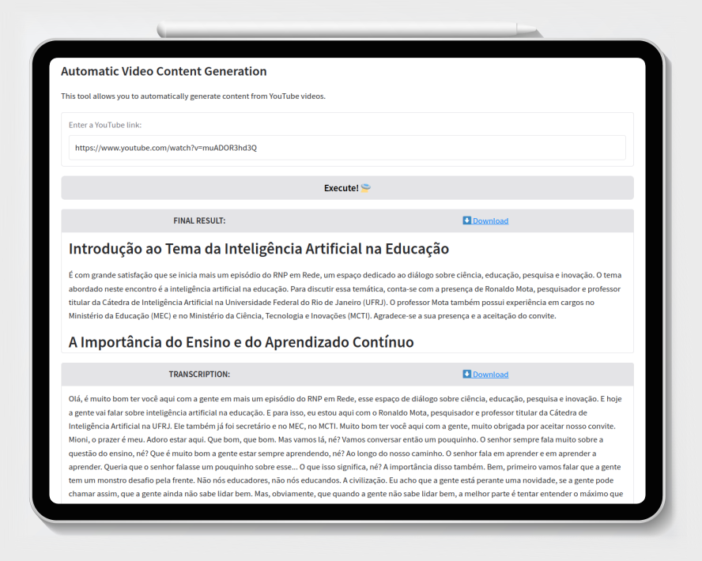

Aprenda no seu melhor formato
Utilize o poder da IA para transformar vídeos em materiais de estudo de fácil acesso e busca! Notas de Aula, Resumos, Flashcards? Não importa seu melhor formato, conseguimos ajustar às suas preferências!

SIGAME
O Sistema Inteligente de Geração Automática de Materiais Educacionais permite utilizar um vídeo de origem e gerar vários materiais a partir dele, como Notas de Aula, Seções e Capítulos de Textos longos, Resumos, Flashcards, entre vários outros.